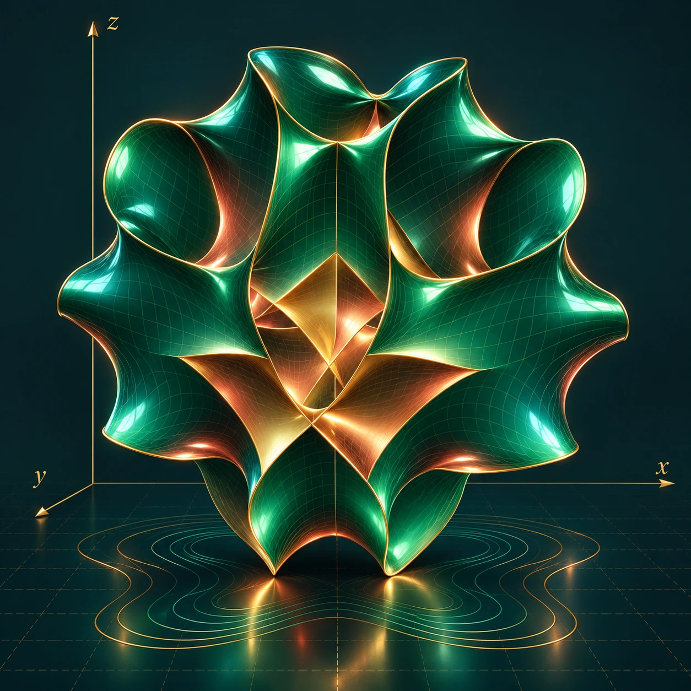
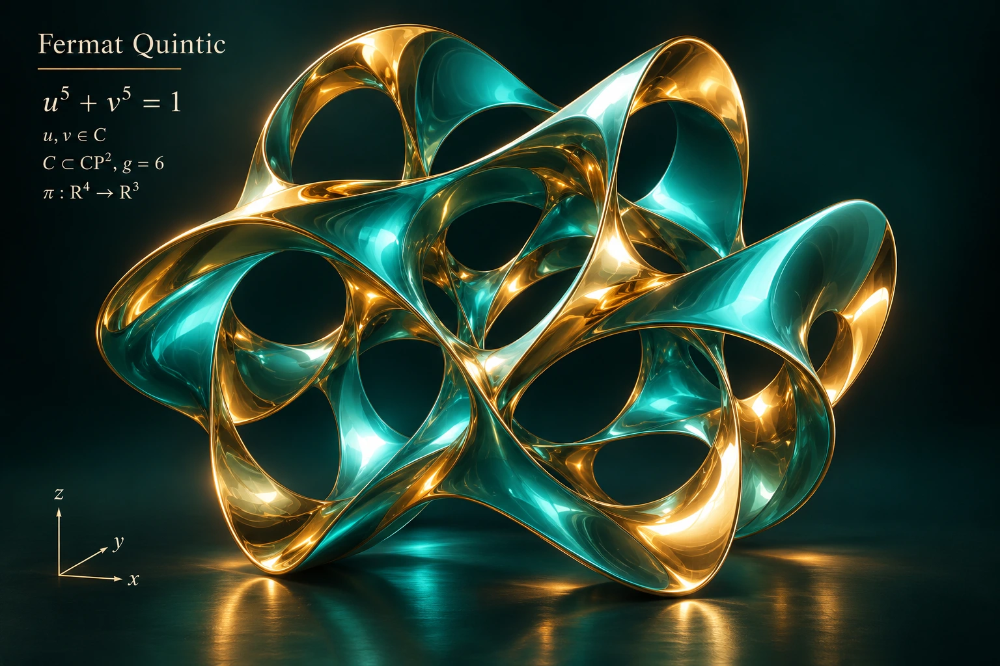
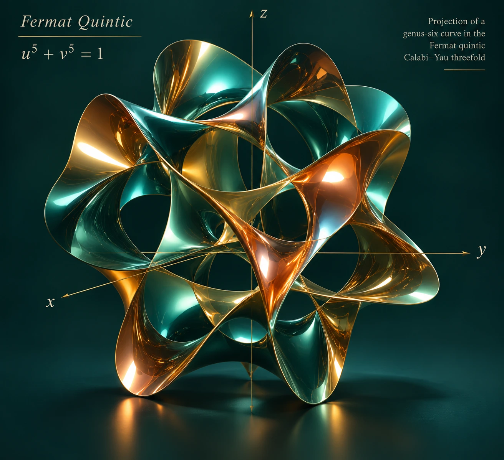
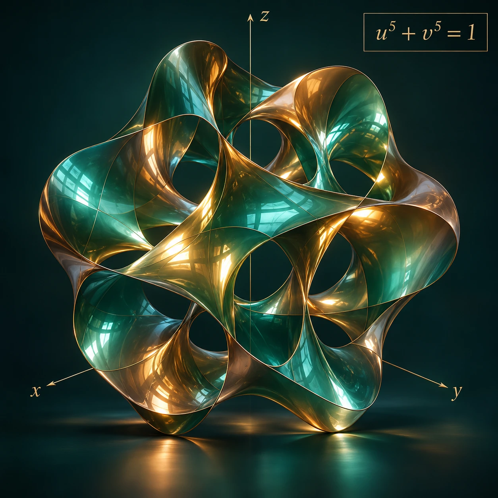
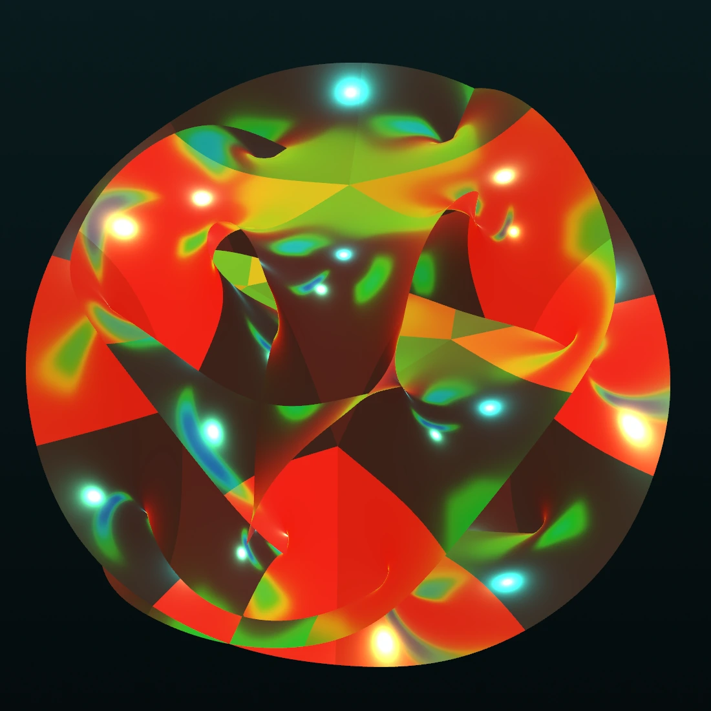
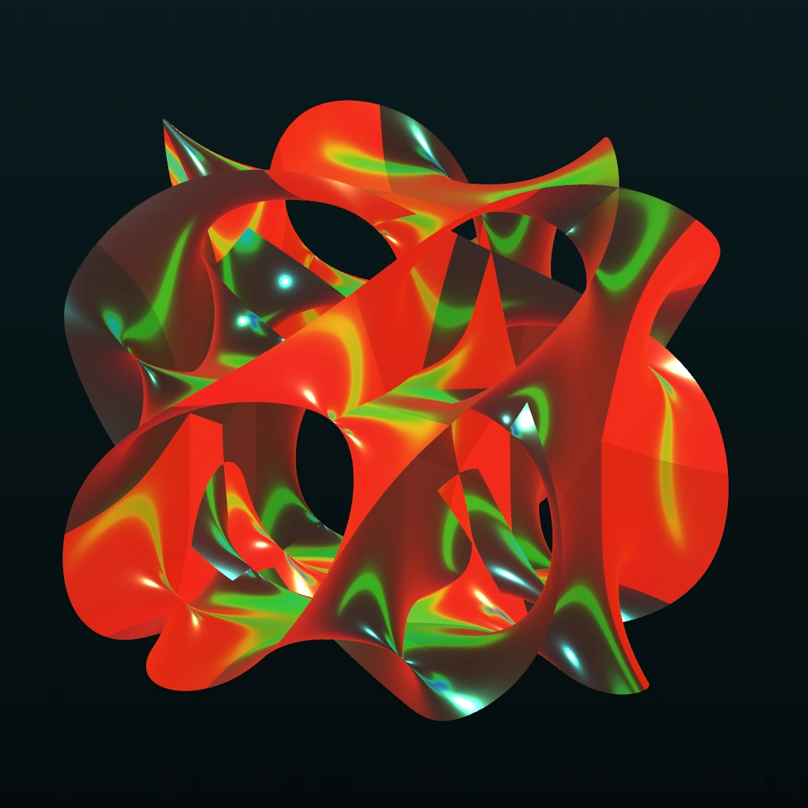
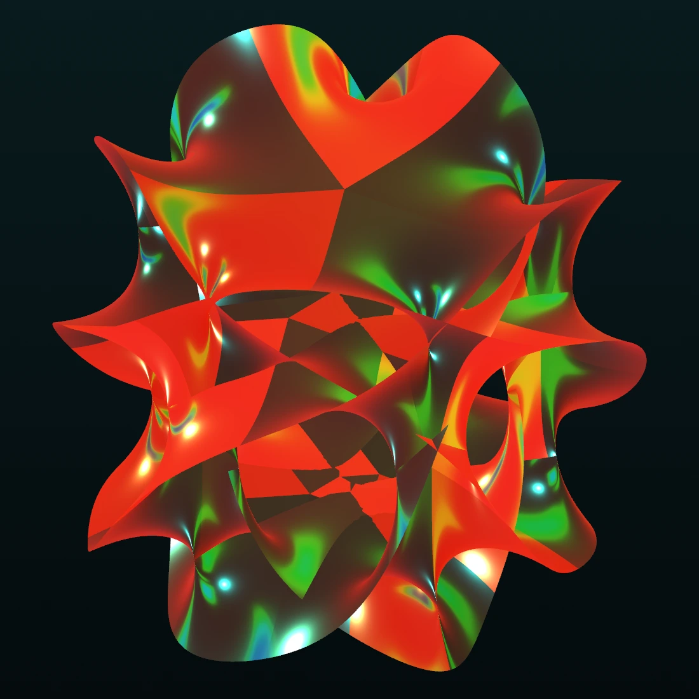

Geometry · Topology · Visual studies
Geometry
beyond sight.
What does a space look like when its dimensions exceed the reach of the eye? Three visual experiments explore the boundary between mathematical structure and artistic imagination.
String theory asks for ten dimensions, and we see four. The other six may form a Calabi–Yau threefold: curved, yet a solution of Einstein’s equations for empty space. Yau proved that its metric exists. Nobody has written one down.
These spaces come in mirror pairs that no string can tell apart. In 1991 physicists used the mirror quintic to predict 317,206,375 rational cubic curves on a general quintic. Geometers computed a different number, then found the bug in their program.
M-theory asks for eleven dimensions. Fold six into a Calabi–Yau, and a membrane wrapped around one of its curves is a charged particle whose mass is the curve’s area. Shrink the curve to a point: the particle turns massless, the space singular. Whether it reopens as a different space is where the research begins.

The freedom of the image
Four sculptural studies in emerald, copper and gold. Inspired by the visual language of complex geometry, they evoke a space that cannot be seen directly.


A dialogue with the quintic
Three studies inspired by the projected plane quintic. The equation provides the mathematical point of departure; the image generator supplies the sculptural interpretation.






What the equation actually gives
Three numerical views of the same affine algebraic curve. Here the geometry is calculated first; color, material and lighting are applied afterward.






Six real dimensions.
One visible fragment.
A smooth Fermat quintic threefold has trivial canonical bundle. Intersecting it with the coordinate plane z3 = z4 = 0 yields a smooth plane quintic of genus six. In an affine chart, after rescaling coordinates, its equation becomes u5 + v5 = 1.
X = {Σ zi5 = 0} ⊂ ℂℙ4
C: u5 + v5 = 1
πθ(u, v) = (Re u, Re v,
cos θ Im u + sin θ Im v)
The computed images sample u = ζj(cos w)2/5, v = ζk(sin w)2/5, with ζ = exp(2πi/5) and consistent branches. This is a projection of part of a curve within X, not a direct visualization of X itself.
Explore the Calabi–Yau research, read the smoothability guide, or pass through a singularity in the Conifold Transitions explorer.